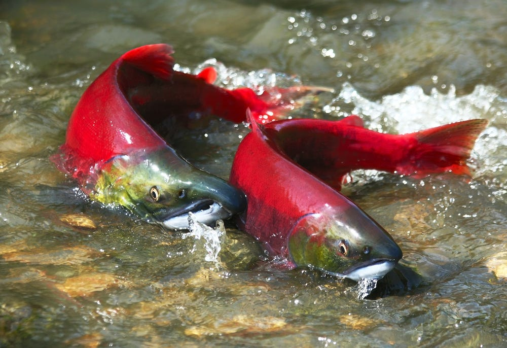

DIVERSE HABITATS HELP SALMON WEATHER UNPREDICTABLE CLIMATE CHANGES
Restored salmon habitat should resemble financial portfolios, offering fish diverse options for feeding and survival so that they can weather various conditions as the climate changes, a new study shows.
The researchers looked at threatened spring-run Chinook salmon in tributaries of the Sacramento River. It found that restored sites that produce lots of fish may be especially vulnerable to changes such as drought. Such sites should be coupled with other varying sites that support the salmon population in diverse ways.
"The fish need all the different opportunities," said Flora Cordoleani, a NOAA Fisheries and University of California Santa Cruz researcher who led the research published this week in Ecosphere. "Fish with one life history that favors certain habitat are not going to save the population in the long term. We need diverse habitats to support diverse life histories that help provide resilience."
Life history refers to salmon traits such as their juvenile migration timing, growth rates, and food preferences. For instance, some juvenile salmon migrate to the ocean in their first year, while others may spend the year growing in freshwater first. That timing may benefit them in some years, but leave them more vulnerable in others, such as during drought.
Spring Chinook salmon were once found across the state and formed the backbone of California's commercial salmon fishery. They are now greatly diminished and survive in only a few key watersheds with worsening trends in numbers. State and federal biologists last fall collected a few remaining spring-run Chinook salmon to begin a captive broodstock that will safeguard the genetic heritage of the species.
Habitat Mix Benefits Fish
Fish benefit most when they have access to a mosaic of interconnecting habitat from streamside vegetation to open floodplains, the research found. Young salmon may grow rapidly when wet years inundate floodplains and produce plentiful food, "but that happens pretty rarely," Cordoleani said. "The key is for the fish to have access to all those habitats, so if something happens to one of them, the fish don't all disappear."
The new research goes beyond earlier studies showing that later-migrating fish had better survival rates. It shows how that played out on the landscape of three creeks that feed the Sacramento River, one of the biggest salmon-producing rivers on the West Coast.
Cordoleani and her team examined Butte Creek, the focus of extensive restoration that produced a large increase in fish numbers that had access to the floodplain. They examined salmon otoliths -- small ear bones -- that record clues about each fish's life history. They found few later-migrating fish, which made the fish there more vulnerable to sharp declines during drought years that may become more common with climate change.
Two other nearby streams, Mill and Deer Creek, offered different conditions and hosted more fish that migrated later as yearlings (juveniles oversummering in freshwater). While they did not see the big increases in fish abundance that Butte Creek did, their salmon better survived droughts. Combining the three sites that complement each other increases the resilience of the Central Valley spring run stock complex -- the term for all the individual populations combined.
"The sum of the parts is much greater, because they are doing different things and supporting the fish in different ways," said Rachel Johnson, the senior author of the research and scientist at NOAA Fisheries' Southwest Fisheries Science Center. "Some of those qualities may turn out to be more or less important as the climate changes."
But relying on these three creeks is not enough. "Spring-run Chinook are already playing the climate stock market with only a few stocks in their portfolio," Johnson said. They were once found in every major watershed. She said a lesson of the research is that more habitat options help fish survive a volatile climate by providing more opportunities to survive and thrive.
Providing that array of options requires restoring diverse habitat areas that complement each other at the landscape scale and returning salmon to historical habitats that had long vanished. Cordoleani and her team hope that this research encourages restoration planners to implement projects that create a mosaic of different habitats across watersheds that support diverse fish survival strategies. These actions will also balance each other to help stabilize numbers in the long term.
NOAA Fisheries West Coast Region. "Diverse habitats help salmon weather unpredictable climate changes." ScienceDaily. ScienceDaily, 14 March 2024. (www.sciencedaily.com/releases/2024/03/240314171501.htm)
